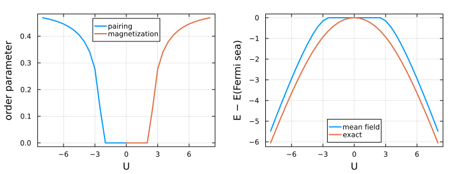

Self-consistent mean-field theory
Mean-field theory approximates the ground state of an interacting Hamiltonian by the best Gaussian (free-fermion) state. mean_field(ham, G, Hbdg) replaces the interaction by its average in the Gaussian state with Nambu correlation matrix G, which leaves a quadratic Hamiltonian; iterating this to self-consistency gives Hartree-Fock-Bogoliubov theory. We apply it to the Hubbard ring, find a magnet for repulsive and a superconductor for attractive interaction, and compare with exact diagonalization.
using FermionicHilbertSpaces, LinearAlgebrausing FermionicHilbertSpaces.FreeFermionsThe Hubbard ring has L sites with spin and is half filled at μ = U/2.
@fermions fL = 6spins = (:↑, :↓)labels = [(i, σ) for i in 1:L for σ in spins]n(i, σ) = f[i, σ]' * f[i, σ]hopping = sum(-f[i, σ]' * f[mod1(i + 1, L), σ] + hc for i in 1:L, σ in spins)hubbard(U) = hopping + U * sum(n(i, :↑) * n(i, :↓) for i in 1:L) - U / 2 * sum(n(i, σ) for i in 1:L, σ in spins);The decoupled Hamiltonian is quadratic, so its BdG ground state gives the next G.
Hbdg = hilbert_space(f, labels, BdG())ground_state_correlations(op, Hbdg) = correlation_matrix(eigen(representation(op, Hbdg, :dense), BdGEigen()));function self_consistent(ham, G, Hbdg; tol = 1.0e-8, maxiter = 1000) for _ in 1:maxiter Gnew = ground_state_correlations(mean_field(ham, G, Hbdg), Hbdg) norm(Gnew - G) < tol && return Gnew G = Gnew end error("The mean-field iteration did not converge in $maxiter steps.")end;A Gaussian state can only gain interaction energy by breaking a symmetry, and the iteration keeps the symmetries of its starting state, so we start from a state that already breaks one. For repulsive U the candidate order is antiferromagnetic: spins alternate up and down around the ring. Its order parameter is the staggered magnetization, the spin (n(i, :↑) - n(i, :↓))/2 on each site with alternating sign, averaged over sites. For attractive U it is superconducting: electrons pair up on a site. Its order parameter is the pairing amplitude, the expectation value of f[i, :↓] * f[i, :↑], which is nonzero only in a state without fixed particle number. Both are at most 1/2. The decoupled Hamiltonian reproduces the interacting energy in the Gaussian state.
staggered = sum((-1)^i * (n(i, :↑) - n(i, :↓)) for i in 1:L)pairing = sum(f[i, :↑]' * f[i, :↓]' + hc for i in 1:L)G = self_consistent(hubbard(6), ground_state_correlations(hopping + staggered, Hbdg), Hbdg)@assert expectation(mean_field(hubbard(6), G, Hbdg), G, Hbdg) ≈ expectation(hubbard(6), G, Hbdg)We sweep U toward zero, starting each point from the previous solution, and compare with the exact ground state in the half-filled sector. Energies are measured from the Fermi sea, the ground state at U = 0.
Hup = hilbert_space(f, [(i, :↑) for i in 1:L])Hdn = hilbert_space(f, [(i, :↓) for i in 1:L])Hsector = tensor_product(Hup, Hdn; constraint = NumberConservation(L ÷ 2, Hup) * NumberConservation(L ÷ 2, Hdn))G_fermi_sea = ground_state_correlations(hopping, Hbdg)function sweep(Us, seed, order_parameter) G = ground_state_correlations(hopping + seed, Hbdg) return map(Us) do U ham = hubbard(U) G = self_consistent(ham, G, Hbdg) E_sea = real(expectation(ham, G_fermi_sea, Hbdg)) E_exact = eigmin(Hermitian(representation(ham, Hsector, :dense))) E_mf = real(expectation(ham, G, Hbdg)) @assert E_mf > E_exact (order = order_parameter(G), E_mf = E_mf - E_sea, E_exact = E_exact - E_sea) endend;Us = 8:-0.5:0afm = sweep(Us, staggered, G -> abs(real(expectation(staggered, G, Hbdg))) / 2L)sc = sweep(-Us, pairing, G -> abs(expectation(f[1, :↓] * f[1, :↑], G, Hbdg)));using PlotsUall, both = [-Us; reverse(Us)], [sc; reverse(afm)]p1 = plot(-Us, getfield.(sc, :order); label = "pairing", ylabel = "order parameter", legend = :top)plot!(p1, Us, getfield.(afm, :order); label = "magnetization")p2 = plot(Uall, getfield.(both, :E_mf); label = "mean field", ylabel = "E − E(Fermi sea)", legend = :bottom)plot!(p2, Uall, getfield.(both, :E_exact); label = "exact")plot(p1, p2; layout = (1, 2), xlabel = "U", lw = 2, size = 0.7 .* (1100, 420), frame = :box, margins = 4Plots.mm)
The left panel shows the order parameters. Mean field finds a magnet for repulsive and a superconductor for attractive U, but only beyond a threshold: for weak coupling the best Gaussian state is the Fermi sea, and its energy (right panel) stays at zero. The exact energy drops below the Fermi sea for any nonzero U, so the exact ground state of this small ring has no such threshold. Mean field is a variational method, so its energy lies above the exact one, and it captures most of the interaction energy at strong coupling.
This page was generated using Literate.jl.